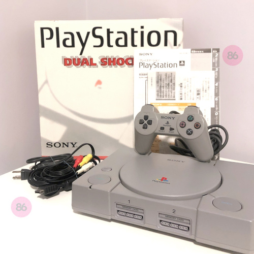

História do PlayStation
Provavelmente você sabe que o PlayStation, criado pela Sony, é uma das marcas mais importantes da história dos videogames. Mas talvez você não saiba que o console nasceu de uma parceria fracassada e quase nunca chegou ao mercado. Pois acompanhe este artigo para conhecer a origem dessa gigante dos games.
O projeto secreto
No final dos anos 80, a Sony trabalhava em conjunto com a Nintendo no desenvolvimento de um acessório de CD-ROM para o Super Nintendo. O projeto era conhecido internamente como “Play Station” e permitiria jogos em CD, algo muito inovador para a época.

Porém, divergências comerciais fizeram a parceria ser cancelada de forma pública, causando grande constrangimento para a Sony. Mesmo assim, a empresa decidiu continuar com o projeto por conta própria, transformando o fracasso em uma grande oportunidade.
O nascimento do console
Em 1994, no Japão, a Sony lançou oficialmente o PlayStation, agora como um console independente. O uso de CDs permitia jogos maiores, com músicas de melhor qualidade e cenas em vídeo, algo que impressionou o público.
O sucesso foi tão grande que o PlayStation rapidamente superou concorrentes tradicionais. Franquias como Final Fantasy, Gran Turismo, Resident Evil e Metal Gear Solid ajudaram a consolidar o console como um dos mais importantes da história.
A estratégia da Sony de atrair desenvolvedores e facilitar a criação de jogos foi fundamental para o crescimento da marca. Isso criou uma base fiel de jogadores e abriu caminho para futuras gerações do console.
Então é isso! Espero que você tenha gostado do nosso artigo com essa curiosidade sobre a origem do PlayStation e sua importância para o mundo dos videogames.